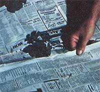

When our family moved to a new country home in Wisconsin, the first thing we did was scout out the property's most promising garden spot. We eventually settled on a sunny site which-judging from its thick growth of grass-was highly fertile. However, when we tilled the plot that fall, the furrows revealed a thick mat of quack grass rhizomes . . . and we began to suspect that the fight against the weed might be more than we'd bargained for.
We gave the battle our best shot, though: In the spring we found a quack grass digger at an auction, attached the tool to our tractor, and vigorously worked the soil to expose the weed's roots to sunshine and drying winds. Nevertheless, soon after our crops were planted, the quack came back with a vengeance ... along with an unbelievable number of other weeds.
Worse yet, the time needed to fulfill various other responsibilities (such as building a new roof on the chicken coop, fencing in the sheep, etc.) prevented us from devoting the many hours of labor required to purge our uninvited garden growth. Soon the weeds pushed right through the thin layer of mulch we'd applied, and-when a drought came in August-the garden dried up. While weeds flourished, our corn leaves curled ... the beet tops wilted ... and the cucumbers, melons, and squash stagnated. Our harvest was poor-to say the least-but the rich, lush growth of weeds convinced us that the soil was fertile and that our chosen spot was a good one.
A CAREFUL EXPERIMENT
Throughout the next winter, we gave a lot of thought to how we might be able to defeat the weeds (especially the quack grass) with the least amount of work. Herbicides were rejected out of hand because of the effects they'd have on the soil and our produce. We considered using heavy mulching, but experience has taught us that the pernicious quack blades can penetrate all but the deepest covering of compost or mulch, and-since we have a sizable garden-we felt we could never accumulate sufficient organic material.
Black plastic was also a possibility, but-because we wanted to give the land the benefit of decaying matter-it was soon rejected. We wanted to use a material that would decompose but that would (for at least three months) deny the weeds access to sunlight, yet allow rain and air to penetrate the soil. Finally, we decided to try newspapers covered with a mulch of leaves and grass.
Rather than use the "new" method on the whole garden right away, we figured we'd test it out on our potato rows. By April 20th the garden was tilled, and we had planted 10 pounds of Norland Reds, 10 pounds of Kennebecs, and 10 pounds of Sebagoes.
No more attention was paid to the crop until the end of May, when the sprouts were two to five inches tall. The weeds were also coming in strong at that time, but instead of hoeing them down we mulched right over them ... in an attempt to smother the pesky plants out.
Two-to four-sheet layers of newspaper were spread over the potato patch, leaving three-inch-square spaces around the sprouts. After that, the contents of numerous bags of leaves, grass, and pine needles that had been collected during spring lawn cleaning were placed-to a thickness of two or three inches-over the paper. (The extra organic material kept the sheets from blowing away and provided a cushion, allowing us to walk down the rows throughout the summer without making holes for the weeds to grow through.)
AN EARLY HARVEST
About the first of July we were able to pull away the mulch from around the early red potatoes and harvest the first new tubers-which were lying on top of the ground-without disturbing the rest of the plants. (As it turned out, we could have done so in June . . . a possibility that should excite folks who relish June peas cooked with new potatoes.) Then, after the middle of July, we harvested the reds and sold 252 pounds, keeping 50 pounds for our own use.
As a bonus, the ground was still damp when we dug the spuds ... whereas our unpapered garden soil was drying up because of a lack of rain. This residual moisture allowed us to plant a green manure crop of oats that we turned under later in the fall. (Since no appreciable rain came for another six weeks, the water "saved" by the mulch turned out to be invaluable.) And, while performing their weed-discouraging, moisture-conserving tasks, the newspapers had already decomposed-in July-to the point where they presented no obstacle to the rototiller when the green manure bed was prepared.
The Kennebecs and Sebagoes weren't dug until late October, but-as with the reds-we did harvest some tubers earlier, as needed, by simply pulling the mulch away from around the plants. And the production of our late white potatoes compared well with that of the early ones. Despite the driest summer we'd seen in several years, our experimental spud crop was fantastic . . . no doubt because of the newspaper mulch.
During late August, a few weeds (mostly quack) had begun to break through the decomposing sheets, but they were too few and too late to affect the crop. Even such a late emergence of grass could have been prevented-we now believe-by using two or three additional layers of paper in the spring.
A ROUSING SUCCESS
Another year of similar treatment should all but eliminate our garden's quack problem. In fact, a second "paper" season may not even be necessary, but we'd rather be safe than sorry . . . especially since so little effort is involved. Mulching with newspapers takes far less time than would be spent in hoeing or tilling a garden the required three or four (at least) times during a season, and only needs slightly more time than applying any of the more common mulches.
The only disadvantage we noticed was that moles-which abound on our land -could not be located and trapped as readily where newspapers were used as they could be elsewhere. However, with a little diligence and "educated" feet, we soon learned to distinguish between the garden's soft soil and a fresh mole run as we walked down the rows.
There's not a question in our minds as to the effectiveness of the experiment. Our crop of potatoes spoke for itself!
|
 Newsprint is tucked around the sprounting spuds to keep the pesky weeds at bay. |
The result of the simple mulching process: a tremendous harvest of tasty potatoes! |
|